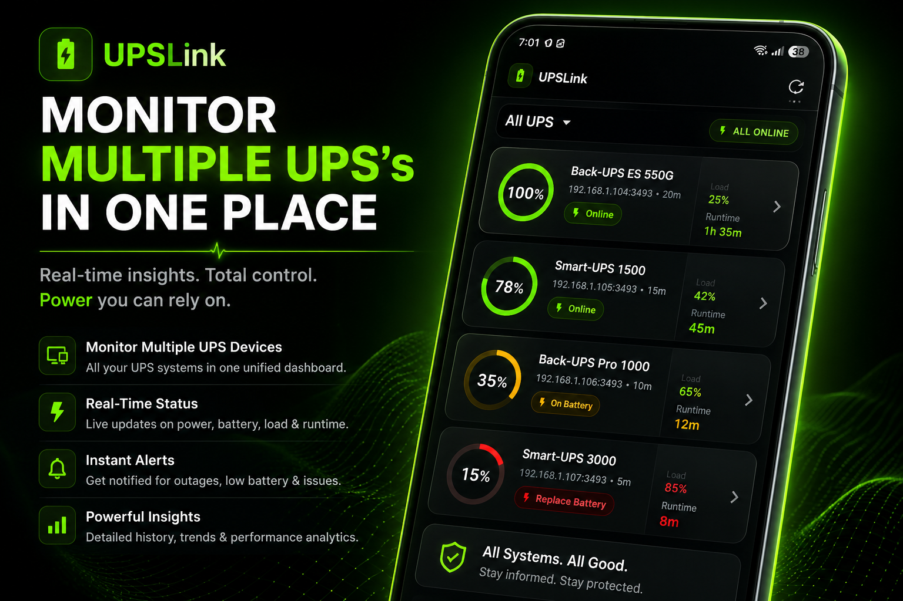
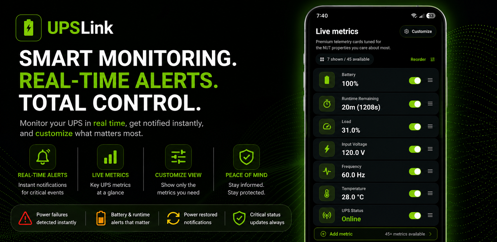
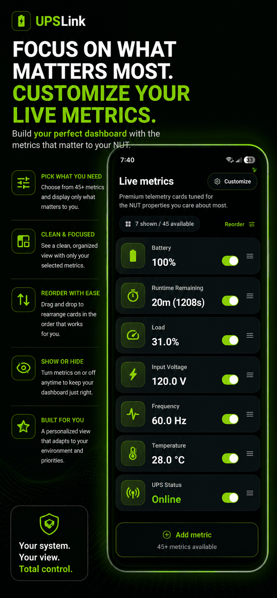
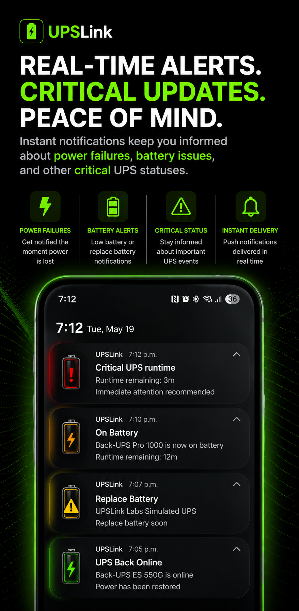
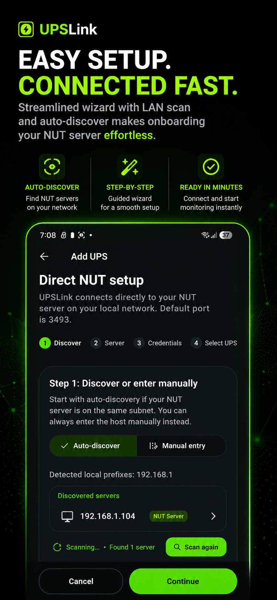
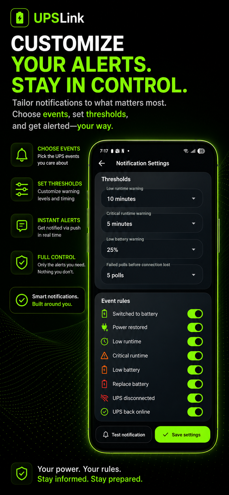
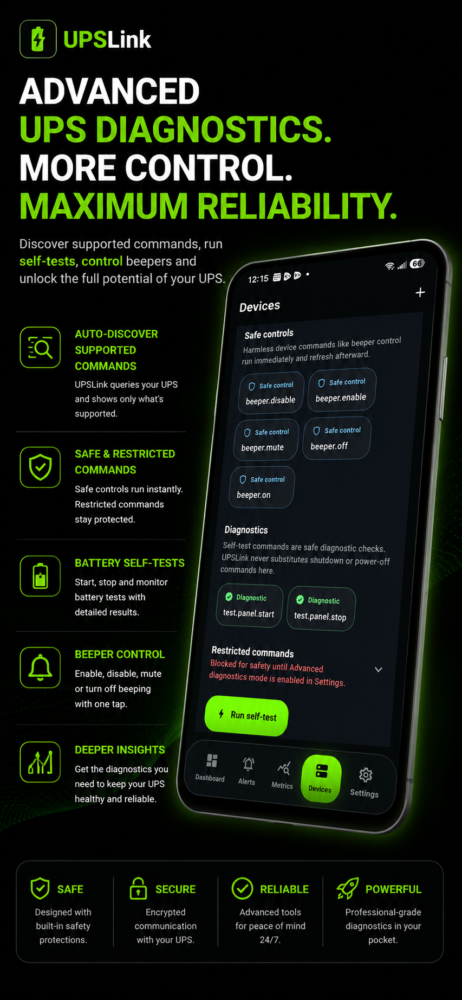

Know when your UPS is on battery before your servers go dark.
UPSLink turns your Android phone into a simple UPS monitor for NUT, Unraid, Synology, Proxmox, TrueNAS, Raspberry Pi, and Linux UPS servers.
Download on Google Play“Fantastic app.”
“I tried your app on an Android tablet. The installation was very quick and easy. I really liked the user-friendly interface. Connecting to the Synology NAS UPS server is simple.”
Your UPS may be quietly handling outages, low battery events, or runtime issues, but the warning signs are often buried on a server, NAS, or dashboard you rarely check.
UPSLink brings UPS status, alerts, runtime, battery health, and widgets directly to your Android phone so you can react before power problems become server problems.
Add your NUT server, Synology NAS, Unraid server, Proxmox host, or Linux UPS server.
View battery percentage, runtime remaining, UPS load, voltage, and live status.
Receive Android notifications for outages, low runtime, low battery, and connection issues.






